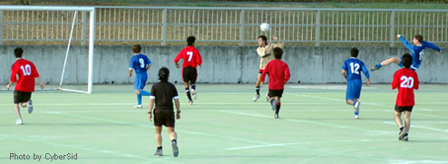
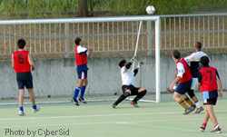
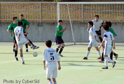
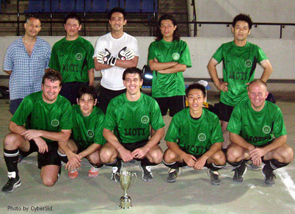

31st July Oi Futo Dai Ni. Tokyo Hibernian FC added to their silverware on Sunday by winning the Paul Adamson Memorial Cup, in a hotly contest final that was decided by a PK
shootout. 8 teams faced off to play in the 7-a-side memorial tournament, played in commemoration of Paul Adamson, the Saitama Jet player who tragically passed away recently.
|  |
Saitama JETs fire in a shot against Hachioji Wanderers in the group stage. Both teams were eliminated in their tough group. |
Although the heat and humidity were unbearable there were goals-a-plenty - 75 in total. The group stages saw early showers for BFC Vagabonds, Hachioji Wanderers, Saitama Jets and an "All-Star" team
forged from random vagrants, known cryptically as "Make up."
|  |
|
The make-up team came under the kosh against BFC losing 4-0 in their group, despite some great saves from stand in keeper Ono.
|
The semi final games were between Hibs and BFC and KGFC and YCAC. Hibs and BFC countered each other's every move in the first 12-minute half, with BFC putting together some promising attacks, only to be foiled by the final ball. Hibs sat tight and every player looked comfortable on the ball - playing 7-a-side as it should be played: 2-touch and lots of movement off the ball. BFC were relying on quick counter attacks, but Hitoshi Ono, Hibs #1 had little to do in the first half, aside from some customary acrobatics. A Hibs strike just before half time was enough to secure Hibs passage to the final stage of the competition - the score could have been more had Sid's lightening reflex save deep into the second half not parried a well struck free-kick around the post. BFC had run out of ideas in the second half, failing even to move the ball successfully out of defense before getting caught in possession or giving away unforced stray passes. Hibs, in contrast, controlled the final stages of the game with an air of confidence and good possession.
YCAC faced off with KGFC, a TML division 2 new entry this coming season, in the other semi final game. KGFC attacked aggressively from the off and were unafraid to run at the YCAC defense, causing havoc on both flanks. YCAC defended resolutely, but at times the technical passing and hypnotic footwork by the KGFC players had YCAC chasing the game. KGFC, a team who will be playing the likes of Shane FC and BFC Vagabonds in TML division 2 next season, had clearly come to this tournament to prove a point. And a score-line of 3-1 in favor of KGFC at the final whistle achieved just that, and had some TML members sit up and take notice of the resolute new young Japanese team.
|  |
|
KGFC putting Hibs under a lot of pressure, they are looking like a great addition to the TML.
|
The final game of the Memorial Cup, between Hibs and KGFC, saw KGFC attack voraciously throughout the first half and play a tight passing game, switching the ball from flank to flank and feeding intelligent balls in for their strikers to hold up. But a packed Hibs defense soaked everything up and their simple yet effective style of 2-touch football, with short passes being passed to feet, worked well in every transition from defense into attack. And when Hibs get a chance, invariably they, or in this case Bevan, will take it - 1-0. The second half was more of the same with KGFC looking for an avenue through the Hibs defense, but by in large to no avail. KGFC's chance did finally come however when a wayward looking cross was somehow volleyed in from an unlikely angle by the KGFC forward - 1-1. 5 minutes (golden goal) extra time was played and considering that these teams had each played about 120 minutes of 7-a-side football, no-one was surprised to see the scores level at full-time. It's no way to decide a game/tournament, but alas the game went to penalties. A fine save (arguably more than a little of his line) from Hibs' Ono secured the Paul Adamson Memorial Cup for the team who also currently hold the TML 1st division title. Congratulations to Hibs.
|  |
Champions Hibs with the Paul Adamson Memorial Cup |
Let's hope that in future tournaments all the teams participating in the TML will show a little more commitment to the schedules that are announced months in advance. These events take a long time to plan and when teams pull-out at the 11th hour it affects not only the organizers of the event, but also the other teams and players who want to play in a competitive event. YC&AC were unable to field a team so they borrowed from teams who had excess players and the problem was solved, at most it takes a couple of e-mails to sort out. Footy Japan will be hosting, amongst other events, an international 7's tournament in the not too distant future. As such invitations to play in such a huge event will be dependent on commitment and trust so let's wipe the slate clean, but let's also take a leaf out of YC&AC's book - going the extra yard can make such a difference.
Report by JD |